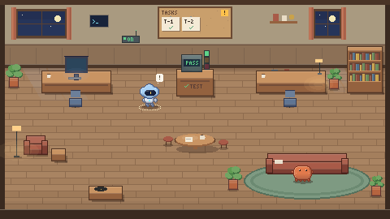
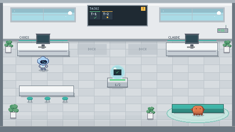
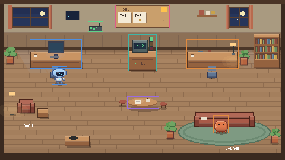

Orca Studio — Phase 2 Art Direction
디자인 검토용 산출물. 구현이 아니다. 모든 장면은 tests/fixtures/snapshot_v1의 모의 데이터로 그렸다.
Hero Mockup (추천안 A, 1440×900)

Art Direction 후보 3종 + 자체 점검

Environment Design Sheet


다시 만들기: python3 design/orca-studio/tools/build.py (표준 라이브러리만)